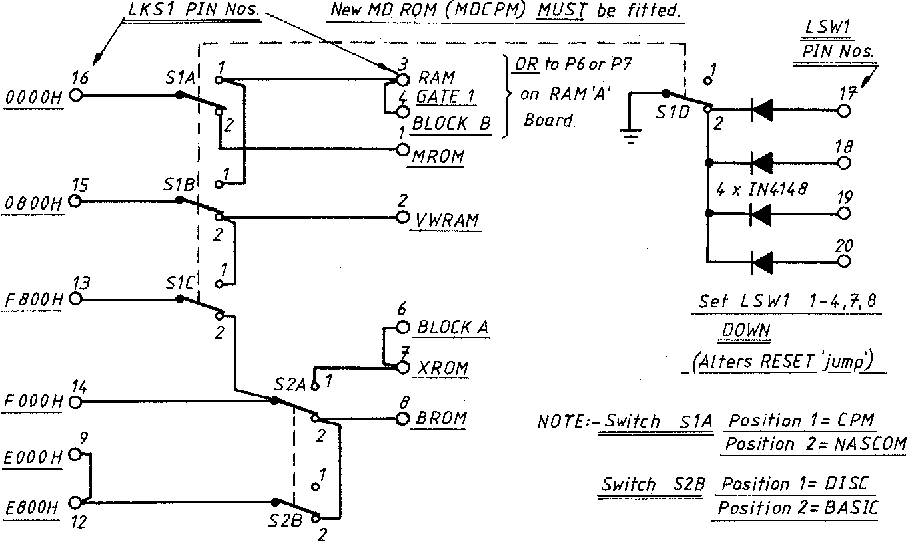

INMC 80 News |
February–April 1981 · Issue 3 |
| Page 30 of 55 |
|---|
since sectors start at 01H rather than 00H, it is slightly less than 32K. This problem can be solved by putting data onto disk (or reading it off) in blocks: not exceeding 30K in length. The whole usable RAM under NAS-SYS/Disk can be tranferred in 2 x 28K blocks, and the whole lot can be read or written in less that 30 seconds.
It has come to the attention of your intrepid reporter that the Great British Post Office (sorry, shouldn’t that be British Telecom?) indulges in a little bit of flag waving now and then. It seems that when they have custom made chips manufactured, they have a little picture of Buzby printed on the masks. Further, it’s rumoured that they use Buzby’s legs as a registartion target. I always thought there were more uses for that dratted bird than the adverts proclaimed.
Whilst on the subject of ego boosting, Nascom, under the guise of the Reciever have been flinging High Court injunctions about. One of the affidavits actually quotes part of this very column (from the last issue) as evidence (of what I can’t figure out)… but still, it’s flattering to mentioned in high places.
Another titbit from the court evidence seems that Nascom want to stop people using the prefix ‘NAS’ on various non-Nascom products. I wonder how they are going to stop the space shuttle carrying the legend “NASA” on the sides ?
Seen in a TR*S* 80 Fortran Manual:
“If a Fortran program is to be run in ROM, the programmer must be aware of the
ramifications.” UGH !!!
| Page 30 of 55 |
|---|